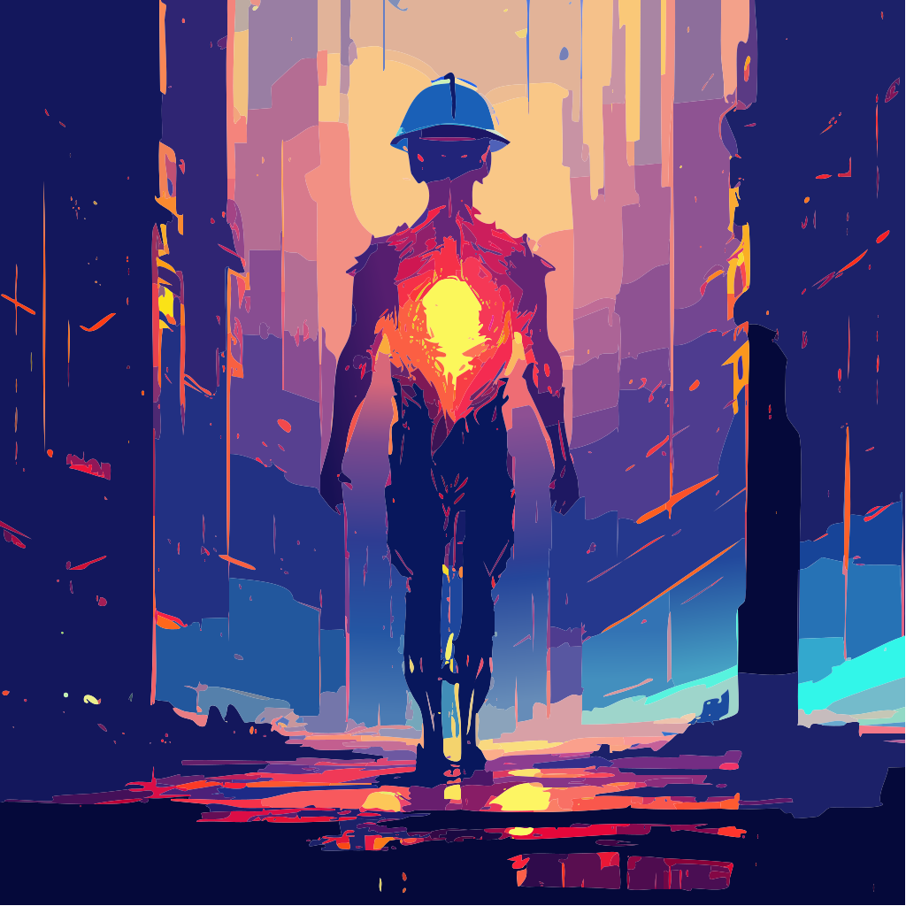

Whether you found this on purpose or by accident — you're in the right place. Solar energy is sold as simple. The reality is anything but. This is 13 years across the full solar lifecycle — from manufacturing floor to final inspection, site survey to service and repair, technical support to RMA. If it touches a PV system, it's been through these hands.
"You're the guy who walks onto a job site that's either heaven or hell, immediately knows which one it is, and knows exactly what it takes to get from one to the other. That's not a tool — that's a navigator."
— Steve the Sprite

String sizing, inverter selection, DC:AC ratio, site survey, voltage limits, conduit fill. The decisions made before the first panel goes up determine everything that comes after.
Clipping losses, bypass diode failures, shade issues, failed inspections, common violations. The diagnostic side — because knowing what went wrong is the first step to fixing it.
What your system is actually doing, what those numbers mean, what to ask your installer. The knowledge that turns confusion into clarity — for homeowners and pros alike.